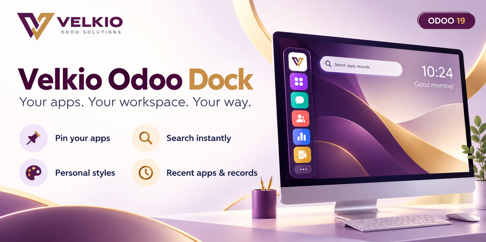
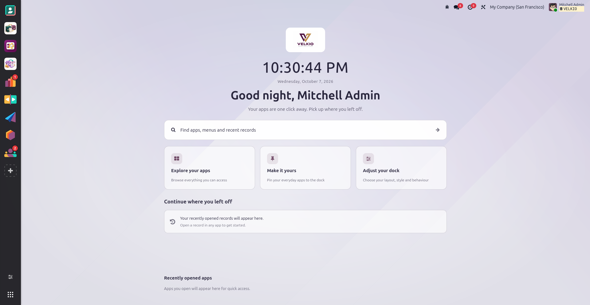
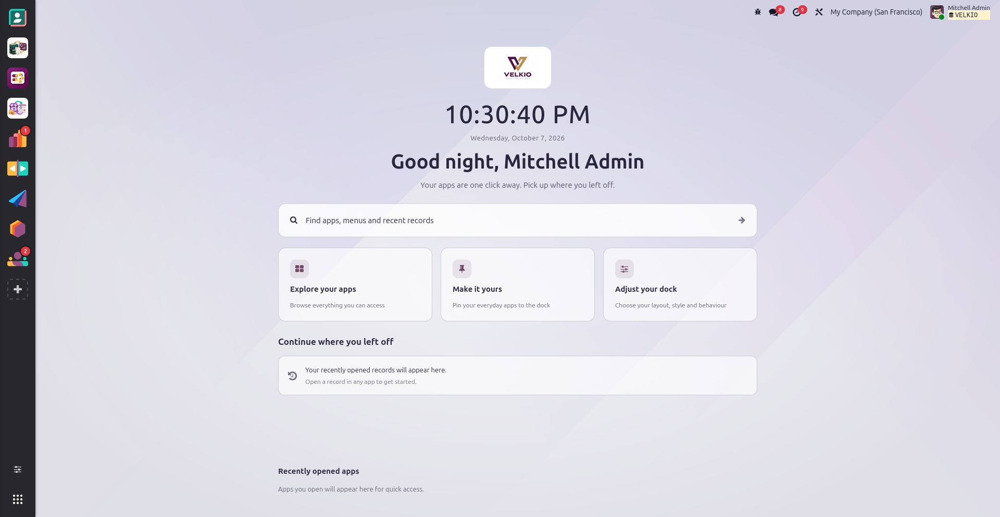
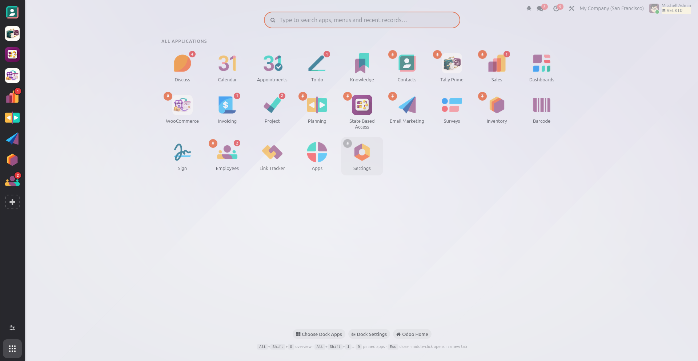
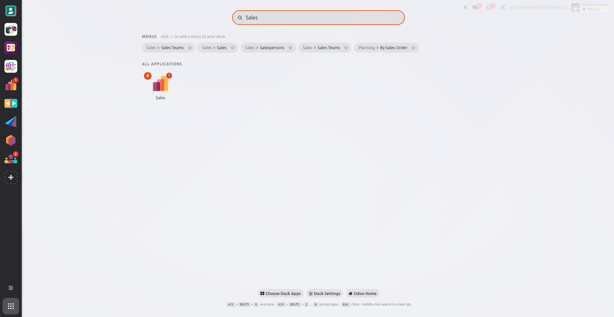
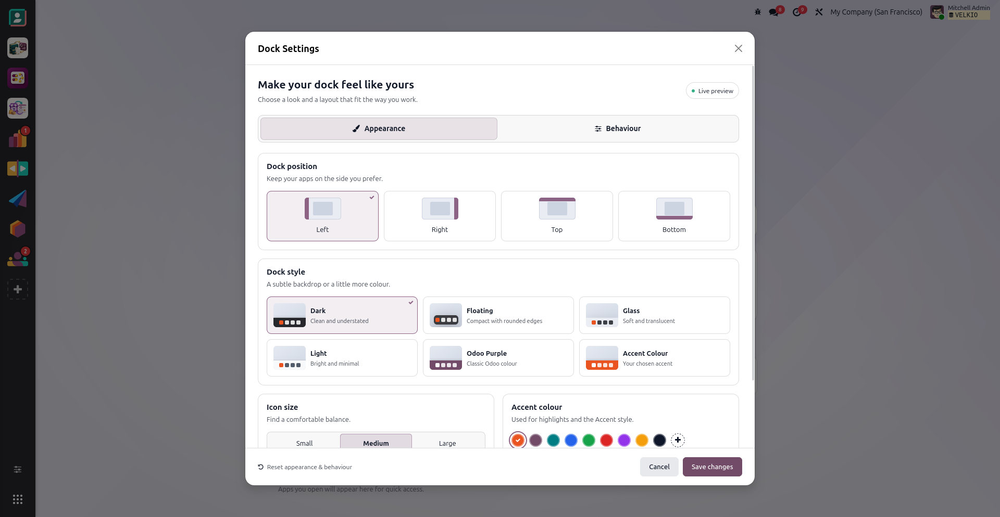
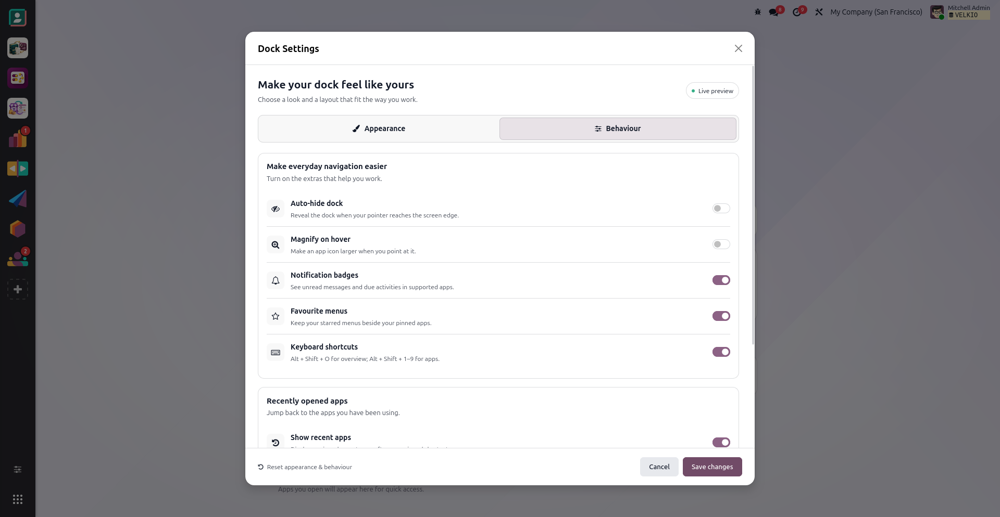
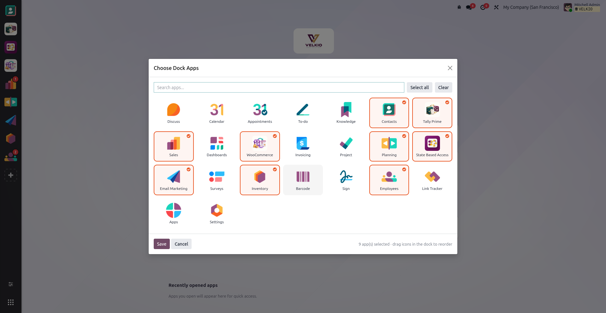

Your personal dock
Pin the apps you use, reorder them by dragging and keep your preferences saved per user.

OVERVIEW
A personal dock for Odoo’s backend, with pinned apps, useful search and a welcoming Enterprise home workspace. Choose how it looks and keep recent work within reach.
FEATURES
Pin the apps you use, reorder them by dragging and keep your preferences saved per user.
Left, right, top or bottom. Choose Dark, Floating, Glass, Light, Odoo Purple or Accent Colour.
Search apps, available menus and recent records from the Show Applications overview.
On Enterprise desktop: your company logo, a live clock, a greeting with your name, and recent work.
Keep recently used apps and starred menus close. Open recent records from the workspace or overview.
Optional badges for supported apps, magnification, auto-hide, keyboard shortcuts and new-tab actions.
SETUP
Add velkio_odoo_dock to your Odoo 19 addons path. Restart Odoo, update the Apps list and install Velkio Odoo Dock.
Click the dock’s + button, select your everyday apps, and drag pinned icons into your preferred order.
Open Dock Settings. Choose Appearance and Behaviour options, preview changes live, then click Save changes.
Set the logo in Odoo company settings. The Enterprise home workspace uses the active company’s logo.
Open an app from the dock. Use Show Applications to find other apps, menus and recent records.
Restart Odoo, upgrade the module and hard-refresh the browser to load new assets. Preferences remain personal.
DAILY WORKFLOW
On Enterprise desktop, see the company logo, live date/time and a greeting in Odoo’s colour scheme.
Choose a pinned app from the dock or search from the application overview.
Star a menu from overview search to add it to your favourite menus.
Return home for recent records and recent apps, or use the overview while working.
REAL PRODUCT SCREENSHOTS
The Enterprise home workspace in light mode, using the Velkio company logo.

The same personal workspace with a live clock and time-based greeting.

Browse apps and recent work from the dock without restoring the default home grid.

Find accessible apps, menus and recent records from one search field.

Four positions, six styles, icon size, accent colour and overview theme.

Auto-hide, magnification, badges, favourites, shortcuts and history controls.

Pick your everyday apps and keep your dock personal.

VIDEO WALKTHROUGH
A captioned video using the real VELKIO screenshots: welcome workspace, search, appearance, behaviour and app pinning.
Watch or download the walkthrough (.webm)The video is included in the module package. For an externally hosted Apps listing video, publish this file and add your real video URL.
FAQ
The dock works with the Odoo 19 backend in both editions. The welcome workspace replaces the Enterprise desktop home app grid; Community retains its normal navigation.
Yes. Pins, preferences, favourite menus and recent history are saved for each user. There is no administrator group-default screen.
The dock and custom home workspace are hidden below 768px. Odoo’s normal mobile home navigation remains available.
No. Returned menus respect Odoo visibility rules, and recent records are checked against the current user’s read access.
Unread Discuss messages and supported due To-dos/activities when the relevant apps are installed. Badge display is optional.
Alt+Shift+O opens the overview. Alt+Shift+1 through 9 open pinned apps. Shortcuts can be disabled in settings.